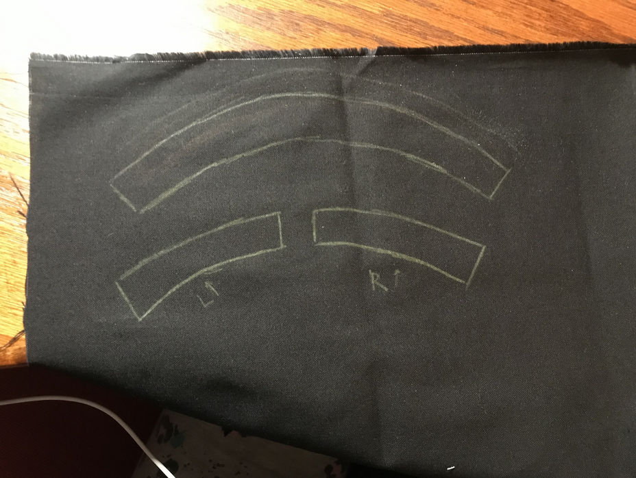

The Pollen Stopper
Co-Designer
My co-designer is my dad, whose pseudonym will be Victor. He is a 42-year old man who lives in the Bay Area in California with his family. He works as a product manager at a software company in the area, and works on a laptop at home for most of his weekdays. His hobbies include running and playing tennis, which he does on the weekends. Over the weekends, he also tends gardens and mows his lawn for about two hours on a weekend morning.
Victor suffers from allergies. His main trigger is grass pollen, which means that gardening often triggers his allergies. His symptoms include itching of the eyes and rashes on his forearms and forehead. These symptoms are usually exacerbated by sun exposure. To mitigate these, he wears hats and long-sleeved shirts outside to protect his skin from the sun, which has been effective. He has also worn masks and sunglasses outside to protect from pollen. While these have worked, they have been uncomfortable for him to wear, so he wishes to have a way to protect himself from getting pollen in his eyes, nose, and mouth while still being able to garden.
Co-Designer Needs Statement
- protect his eyes, nose, and mouth from pollen as he gardens.
- see what he is doing as he gardens.
- breathe well as he gardens.
- keep the product clean and free of sweat.
- reuse the product to avoid waste.
- move around easily and unhindered.
Victor needs to be able to...
Product Requirements
The product...
- blocks particulates greater than 15 microns in diameter.
- allows the user to see clearly out of it at all times.
- does not tightly block the airways of the user.
- weighs no more than 200 grams.
- protrudes no more than 5 cm. from any part of the face.
- is reusable.
- can be washed or cleaned easily.
Initial Brainstorming Narrative
Before I started looking at solutions, I made sure to clarify the meaning of each of my co-designer’s need statements with them during our interview. During this process, I learned about many nuances of his prior attempts to solve his issues with allergies that I kept in mind while brainstorming. I learned that sunglasses, which he had tried in the past to reduce the amount of pollen that went into his eyes, restricted his peripheral vision to a degree that he found uncomfortable. I also learned that he had tried wearing several different types of masks while gardening for the same reason, ranging from reusable cotton masks to bandanas. All of them hindered his breathing to a certain extent, but looser masks also tended to fly inside his mouth and fully restrict his breathing as he was moving. As I proceeded to the external search, I made sure to look for these weaknesses in products on the market and think about how I could rectify them.
Later on in the process, using all of this information, I fully clarified the objective of my product in one sentence: The product must protect the co-designer’s eyes, nose, and mouth from pollen and other plant-related allergens while he gardens without restricting his movement, breathing, and visibility, and while being reusable and easy to clean.
Next, I started my external search researching different types of masks. I knew that, for this product to lessen my dad’s symptoms, it was essential for it to block the right sized particles (I decided that this should be around 15 microns, since it is what some quick research told me was the smallest average diameter of a grain of pollen). I found several options, but the one that looked most promising was the Respro Allergy Mask as it looked comfortable and was reusable.
After this, I started looking for options to protect my dad’s eyes. I discovered glasses made for hay fever and dry eye, which had plastic or silicone pieces above and around the sides of the lenses to create a closer seal with the face and block particles from getting in and out. These designs helped inform my designs for my own goggles as I moved into the internal search.
The drawings shown are the designs I came up with during my internal search. Several of them are variations upon the idea of having a store-bought mask and goggles that I design, though some of them explore joining the two in one product. After I drew these quick sketches to record my ideas, I evaluated them against each other using the table. The numbers in each cell are on a scale from one to five, five meaning that the product performs extremely well in that criterion.


After using this design matrix, I identified the two designs that scored the highest (choosing the second-place design based on what I thought would be safer to build) and drew more detailed sketches of those. After meeting with my co-designer once more and getting his feedback, I chose the second one (design 9 in the matrix), which is shown, to prototype.

Final Prototype
Bill of Materials
- ZIONOR X Ski Goggles - $32.99 - https://www.amazon.com/ZIONOR-Snowboard-Spherical-Detachable-Protection/dp/B07VRKL7K4/
- Breathe Healthy Honeycomb Face Mask- $17.00 - https://www.amazon.com/Breathe-Healthy-Honeycomb-Black-Mask/dp/B009R9OLM8/
- Aleene's 23473 Fabric Fusion Permanent Fabric Adhesive - $5.88 - https://www.amazon.com/Aleenes-Fabric-Fusion-Permanent-Adhesive/dp/B00178QSE6/
- Joann Black Cotton Fabric (½ yard) - $4.97 - https://www.joann.com/108in-solid-fabric/6986681.html
Build Instructions
Step 1: Obtain all materials
In addition to the materials listed, some tools that may be helpful for this project include scissors, microfiber cloth, a sheet of paper, a colored pencil or writing utensil of some kind, and a paper napkin.
Step 2: Measure fabric
The main modification made to these goggles was the addition of the fabric to the vents to help block pollen. To make sure that the fabric is properly sized to cover the vents, cut the fabric using the goggles as a template.
Place the goggles vent-side down on top of the fabric, and mark the shape of the vents on the fabric. I used a colored pencil to do this since it showed up on the black fabric I had purchased to blend in with the goggles.
Do this for both the top and the bottom vents. In the end, I had three shapes marked on my fabric (one for the top vent and one for each of the bottom vents).

If necessary, this process can be repeated several times to create several layers of fabric that can be added to the goggles. I determined whether or not I would need to do this by shining a light behind the fabric to get a general idea of how thick it was.
I decided that one layer, in addition to the light foam already on the goggles, would suffice for my purposes.
Step 3: Cut fabric
Cut along the lines now drawn along the fabric. Once each section is cut out, measure it against the corresponding part of the goggles.
Because the goggles were quite bulky, my outlines on the fabric were slightly inaccurate. Once I cut out my pieces of fabric, I trimmed them further to make sure that they would fit.
When cutting the fabric, make sure to leave the pieces slightly larger than the foam vents on all sides. The extra space around the vent will be where the fabric glue is applied.
Step 4: Glue fabric onto vents
If necessary, open the fabric glue and pierce the tip with a safety pin.
Next, apply the glue to the goggles at the point where the silicone frame and foam vents meet. I applied a bit of glue to both of these surfaces, but to ensure that the vents were not hardened over and blocked by the glue, I kept most of it to the edge of the silicone frame.
Once the glue is applied to the border of one of the vents, place the fabric on top and hold for about ten seconds. Repeat the process for each vent and let dry overnight.
Step 5: Remove the lenses
The other modification made to these goggles was a slight trim of the foam in the middle. Before modifying the frames, it is important to remove the lenses so that they do not get scratched.
Move the pegs on the sides of the frames to point outward. Then, push the lenses out from under these pegs, one side at a time. Finally, pull the frame off of the lenses, starting in the middle of the top and moving along the frame to end at the nose bridge.

Step 6: Trim foam
First, wear the goggles and note the parts under the eyes where the foam is compressed against the face. Avoid these while cutting so as not to affect the fit of the goggles.
Using a pair of sharp scissors, carefully trim off a couple of millimeters of foam at a time. Check the fit after each adjustment and test the changes to the peripheral vision while looking down. Once it is no longer possible to trim foam without affecting fit or once the desired changes to the field of vision are achieved, insert the lenses once more.
Final Exams!
I plan to perform two different tests with this second iteration. The first will be a test to establish comfort and fit. I will ask my co-designer to wear the product as intended, and ask him for some subjective quantitative (scored out of ten) feedback. Since my co-designer has used solutions like sunglasses and masks in the past, I plan to evaluate my design against these to see if it performs better than those relatively general and unspecialized products.
Next, I plan to test this second iteration with my co-designer in the environment in which it is intended to be used. One weekend morning, we will go outside to our garden and use the goggles and mask while he gardens. I plan to ask a set of subjective questions and collect both quantitative and qualitative data about his sunglasses-and-mask solution to establish it as a control. Immediately after the co-designer uses my current design while gardening, I will ask him this same set of questions about the product that I designed to obtain an accurate comparison.
Since my co-designer’s symptoms sometimes arrive a few hours after he finishes gardening, I plan to develop another questionnaire for him to take after gardening.

Comfort: Rate the fit around:
During use:
Notes:
- Sweat got into his eyes with his previous solution of sunglasses and a mask, but not with these goggles.
- He sweat more on his nose and face sweat with the goggles
- Compared to the sunglasses, peripheral vision was hindered, especially when looking down as a result of the mask and the goggles.
- My co-designer is worried about keeping goggles clean so as to avoid skin infections.
- There was surprisingly little fogging of the goggles.
After use:
Overall, the product was a success! The goggles prevented my dad from experiencing symptoms while or after gardening. They were also relatively breathable and easy to see out of. The main lingering issues with the product were the obstruction in vision when looking down and the fact that it caused my co-designer to sweat more on his nose and face than the sunglasses did. To address the first, I made the aforementioned modification of trimming the foam, which helped slightly. To help with the other, I conducted a search for safe methods to clean ski goggles. Using the information I gathered, I created an instruction sheet for my co-designer to use to keep his goggles clean in the future. After testing this washing method, we were able to confirm that it did not harm the goggles.

Future Improvements
In the future, I would like to further address the issue of the reduced peripheral vision when looking down. I noticed that my co-designer had to significantly crane his neck downward to see things at his feet while he gardened, so a redesign would include a way to reduce the bulkiness of the frames or eliminate them altogether.
I would also like to make the goggles more inconspicuous so they can be adapted for daily wear. I noticed that my co-designer would wear the goggles even when he was not gardening, since they helped his symptoms. I would like to make it more feasible for him to do this by redesigning the product to look more like hay fever goggles that can be worn all day.
Scalability
My design is fairly scalable, and since plant allergies are quite common, this scalability might mean that this design could potentially help many more people. Mass-producing this prototype would first necessitate a slight redesign of the frame to be less bulky and conspicuous. Once that is done, molds could be made for the lenses and the silicone or foam part that creates a seal against the face, and the parts created by them would have to be assembled to create the completed product.
Design Process Reflection
If I had to design this product again, I would make sure not to start with the assumption that I have to make everything from scratch in order to be doing something worthwhile. At the start of this design process, I was planning on laser cutting my own goggles out of PLA or another plastic. With that plan came a lot of risks in comfort and durability. When I decided to modify commercially available goggles instead, I was able to focus on how well my product prevented my dad’s allergies rather than whether or not they would survive repeated use, so I will definitely keep this in mind as I move forward in engineering.
I would also make sure to come prepared to the class and process by inquiring early about the requirements of the project. Much of my first week of the course was dedicated to finding a co-designer, and while this didn’t affect my final product as it ended up being quite simple to construct, had I chosen a more complicated project, I might not have been able to finish it within the course. Going forward, I will make sure to start any new designs with a lot of preparation and ask for as much information as I can get beforehand.